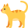

الجملة الاسمية: المبتدأ والخبر
الدرس 4 من 6 — التطبيقات الكتابية: التراكيب والأساليب
أُلاحظ
أقرأ الأمثلة وأستمع إليها، وألاحظ الكلمات الملوّنة.
- الْوَلَدُ مُجْتَهِدٌ.
- الْقِطَّةُ نَائِمَةٌ.
- الشَّمْسُ مُشْرِقَةٌ.
أستنتج
المبتدأاسمٌ مرفوعٌ يبدأ به الكلام: الْبَيْتُ جَمِيلٌ.
الخبرما نُخبر به عن المبتدأ، ويأتي بعده ويكون مرفوعاً: الْبَيْتُ جَمِيلٌ.
مرفوعاضغط على الكلمة الملوّنة لترى إعرابها، وعلى 🔊 لتستمع.

الْوَلَدُ مُجْتَهِدٌ.

الْقِطَّةُ نَائِمَةٌ.

الشَّمْسُ مُشْرِقَةٌ.
المبتدأ والخبر كلاهما مرفوع، ويُسمّى هذا النوع من الجمل «الجملة الاسمية».
أُطبّق
1في «الْبَحْرُ هَادِئٌ»، المبتدأ:
2في «الْكِتَابُ مُفِيدٌ»، الخبر:
3علامة رفع الخبر:
4استمع: ما المبتدأ؟
5استمع: ما الخبر؟
6الاسم الذي تبدأ به الجملة الاسمية يُسمّى:
إجابات صحيحة من أول محاولة:
أتمرّن أكثر
أستمع، ثمّ أكتب ما أسمع:
أستمع، ثمّ أكتب ما أسمع:
✓ أنهيتَ هذا الدرس
الرسوم: Twemoji (CC-BY 4.0) وFluent Emoji من Microsoft (MIT). الأصوات: صوت عربي اصطناعي.